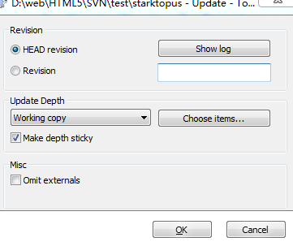

中文使用手册
第1步 新建一个文件夹，空白处右键 SVNcheckout... 搭建环境
第2步 tortoiseSVN - add 添加缓存

第3步
SVN Update 更新项目，与服务器版本同步，注意：正在修改的项目会跳过。
SVN Commit 上传最新修改的项目。
版本回滚 Update to revisition

Revert to this revisition
回滚到该版本
Delete 删除 再 Commit 上传最新项目
项目上锁，说明你不想让人修改自己的项目。
左下角steal the locks 强行解锁